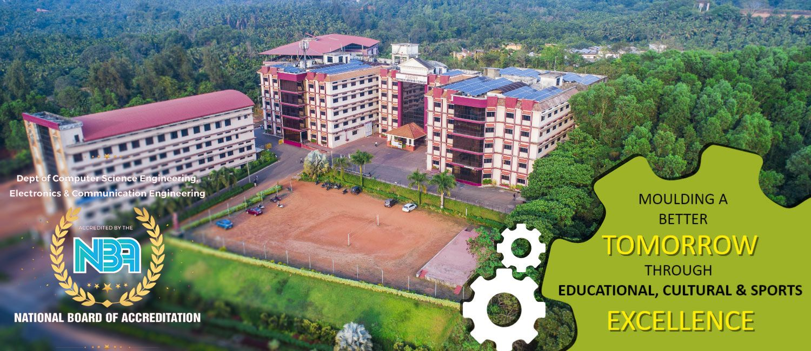

ALVAS INSTITUTE OF ENGINEERING AND TECHNOLOGY
A Unit of Alva's Education Foundation(R), Moodbidri
(Affilliated to VTU, Belgaum, Approved by AICTE, New Delhi, Recognized by Govt. of Karnataka)
Welcome to Alva’s Institute of Engineering & Technology (AIET)
About us

Alva’s Education Foundation® (AEF) was born out of the entrepreneurial vision of Dr M Mohan Alva, an ayurvedic doctor, an educationalist and a social reformer in Moodubidri, South India. Alva’s Institute of Engineering and Technology is a premier engineering college situated in Mijar was founded in 2008 by AEF to provide affordable quality professional education to the youth of this underdeveloped region.
Established in 2008, AIET has launched path-breaking initiatives in Indian higher education with the introduction of innovative and modern curricula, insistence on academic discipline, imparting of Holistic Education and adoption of global higher education practices with the support of creative and dedicated staff. The Institute is affiliated to Visvesvaraya Technological University, Belagavi and recognised by AICTE and University Grants Commission (UGC) of India. In the last academic year two of its departments Electronics and Communication Engineering and Computer Science Department have secured NBA accreditation.
Vision and mission
Vision
“Transformative education by pursuing excellence in Engineering and Management through enhancing skills to meet the evolving needs of the community”
Mission
- To bestow quality technical education to imbibe knowledge, creativity and ethos to students community.
- To inculcate the best engineering practices through transformative education.
- To develop a knowledgeable individual for a dynamic industrial scenario.
- To inculcate research, entrepreneurial skills and human values in order to cater the needs of the society.
Departments
BACK TO TOP